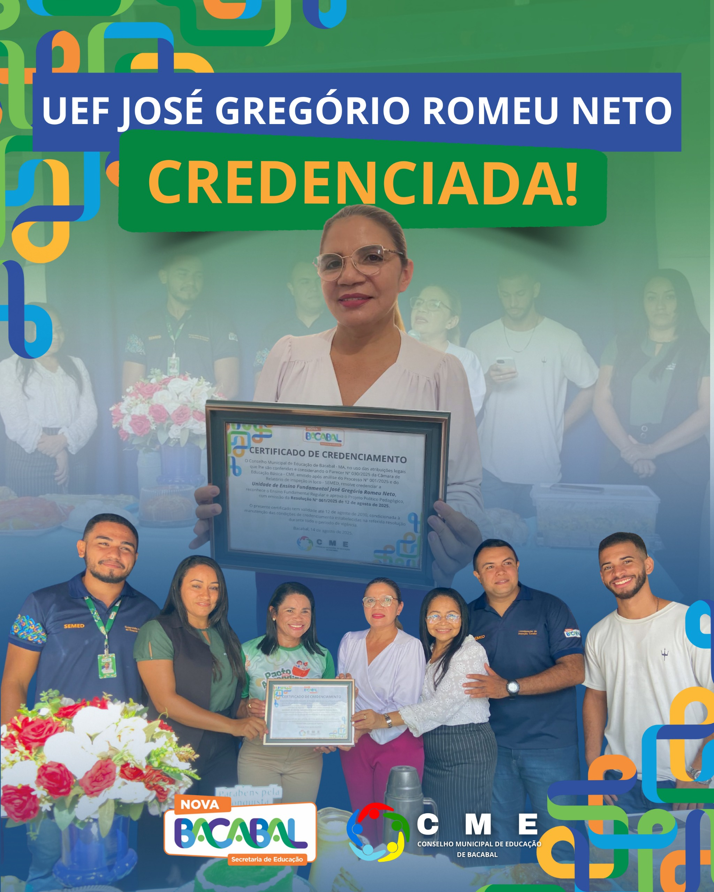

Data: 13 de agosto de 2025
Horário: 08:00 - 12:00
Descrição
A Unidade de Ensino Fundamental José Gregório Romeu Neto recebeu oficialmente seu certificado de credenciamento, em solenidade realizada com a presença da equipe gestora e representantes da Secretaria Municipal de Educação e do Conselho Municipal de Educação.
O credenciamento é mais um passo importante para a consolidação da rede de ensino de Bacabal, garantindo que a unidade esteja plenamente regularizada junto às normas educacionais e apta a oferecer um ensino de qualidade, com segurança jurídica e pedagógica para a comunidade escolar.